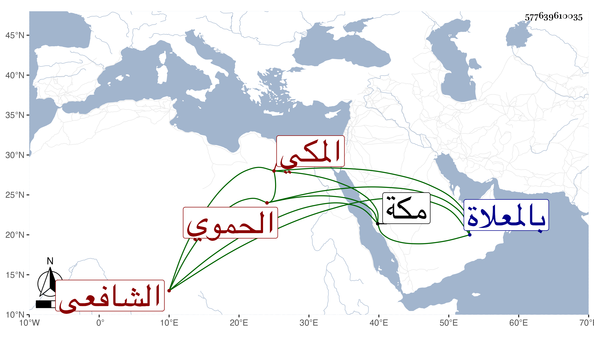

0902Sakhawi.DawLamic.ITO20230111-ara1.EIS1600.577639610035
Biography ID: 577639610035
237
محمد بن عبد الله بن محمد بن الضياء محمد بن عبد الله بن محمد بن أبي المكارم أبو الخير الحموي الأصل المكي الشافعي ويعرف بابن الضياء . سمع على الزين المراغي الكثير وقرأ في التنبيه حفظا وبحث منه جانبا على قاضي مكة المحب بن الجمال ابن ظهيرة وكان كثير الملازمة له ويكتب عنه بعض الإسجالات وتبصر به في الفقه مع حياء وخير ودين . توفي في ضحى يوم الأربعاء مستهل جمادى الأولى سنة ثلاث وعشرين بمكة ودفن بالمعلاة عن نحو ثلاثين سنة .
